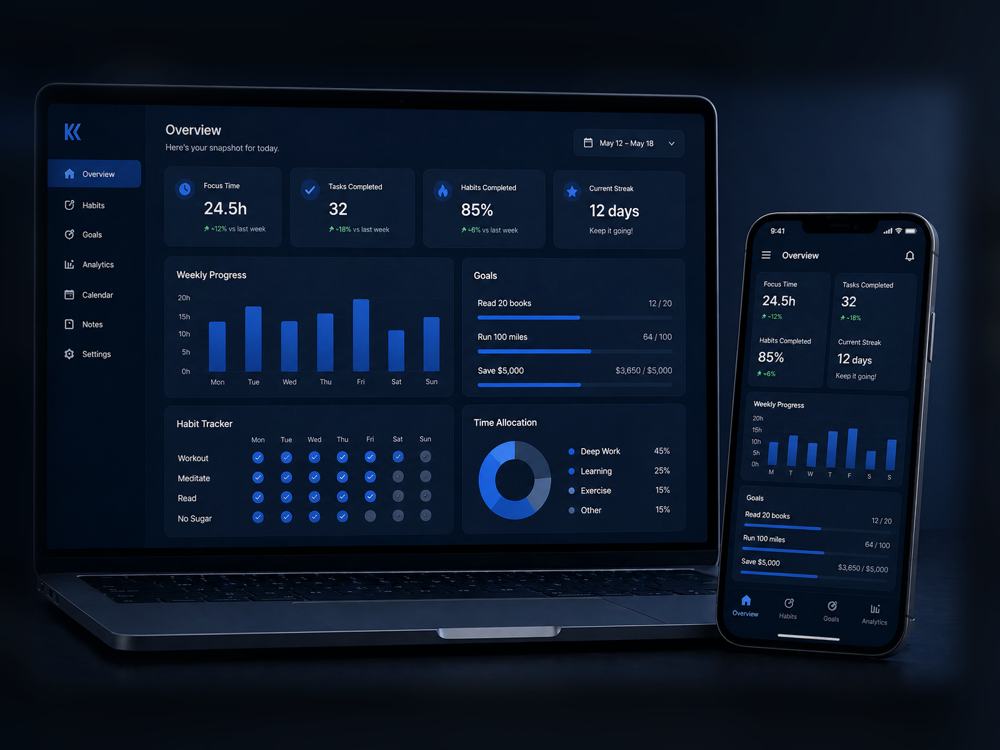

What I can build
Responsive product interfaces, relational database designs, AI-assisted workflows, and tools that connect technical decisions to practical user needs.
Information Systems + AI product builder
I build practical software, data systems, and AI-assisted workflows that make messy processes easier to use.
Recruiters can use this site to quickly see what I have shipped, how I think through systems, and how my technical work connects to real operations, users, and outcomes.
Recruiter snapshot
A short hiring-oriented view of what I can do, where I have proof, and how to follow up.
Responsive product interfaces, relational database designs, AI-assisted workflows, and tools that connect technical decisions to practical user needs.
Start with Heavy Lifting for a shipped app, then compare the dashboard, OfferWise, and landing page studies for range across product, data, and UX.
LinkedIn and email are the two contact points. GitHub is included as a code trail for reviewing how I build, while the resume stays one click away for quick screening.
Completed work first
The strongest proof on this site is completed work. Heavy Lifting leads, followed by projects that show product thinking, data awareness, and interface polish.
Flagship project
A mobile-first PWA that plans and tracks workouts, recommends weights based on past performance, and uses Claude AI as an optional enhancement layer. It works offline, installs to your home screen, and is built around reliable progression rather than gimmicks.

Data product
A consolidated dashboard concept for tracking habits, goals, and useful personal metrics with a cleaner visual system and practical drill-down interactions.

Career tool
A job offer evaluator that scores compensation, benefits, role fit, risk, and negotiation leverage against market benchmarks.
About
I'm an Information Systems student at the University of Florida pursuing a combined BS and MS with a Data Science focus. I approach problems systematically, using data to inform decisions and AI to accelerate solutions.
Whether I'm designing databases, building AI-powered apps, or optimizing operations, I focus on creating systems that work well in practice and scale cleanly over time.
Outside of academics and projects, I'm passionate about community building and exploring how technology can improve the way people work, train, and collaborate.
Workflow
AI helps me move faster, but the work still depends on judgment, revision, and understanding what should actually be shipped.
Strong prompting is the foundation: I define context, constraints, examples, and the desired output before asking AI to help shape the first direction.
I sketch structure first: flows, layout, data logic, and how the product should actually behave in use.
AI accelerates setup and iteration, but I review the logic, improve the UI, and make sure the work makes sense.
I tighten the experience, remove noise, and shape the product around what actually improves usability.
Experience
I like work that combines systems clarity, execution, and people-facing operations. These roles and skills support that.
HTML, CSS, JavaScript, Responsive Design
SQL, MySQL, Database Design, ER Modeling, Python, R, Excel (Solver, Pivot Tables)
Figma Basics, Canva, UI Layout & Inspiration
Claude & Codex Integration, Prompt Engineering, AI-Driven Workflows, Automation (Applications & Data)
The Standard Gainesville | 2025–Present
Manage high-volume resident operations including leasing tours and follow-ups, maintaining near-full occupancy. Handle large daily package volumes and coordinate unit turnover with vendors and inspections.
O'Connell Center, University of Florida | 2024–Present
Execute event setup and breakdown for sports and large-scale events, including full arena conversions. Work in small teams under time constraints to ensure smooth transitions between events.
Contact
For recruiting conversations, LinkedIn is the fastest route. Email also works well for interview scheduling, project questions, or resume follow-up.
Apps and experiments
Games, side apps, and experiments are grouped separately so this homepage stays focused on recruiter review.